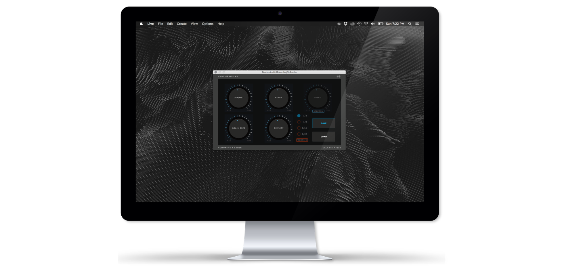

<section class="silver-bg project-cover quarterheight">
  <div class="valign">
    <article class="welcome-heading text-center">
      <h1 class="dark"><span class="font2">Research</span></h1>
    </article>
  </div>
</section>

<div id="works-container" class="works-container works-masonry-container clearfix white-bg">


    <!-- start : works-item Audio Encryption -->
    <div class="works-item works-item-full-width zoom art">
      
      <a  href="MNMLGranular.pdf">
          <div class="works-item-inner">
            <h3 class="color font2">MNML Granular &amp; Unsupervised Synthesis Programming</h3>
            <p><span class="dark font4"></span></p>
          </div>
      </a>
    </div>
    <!-- end : works-item -->
</div>
